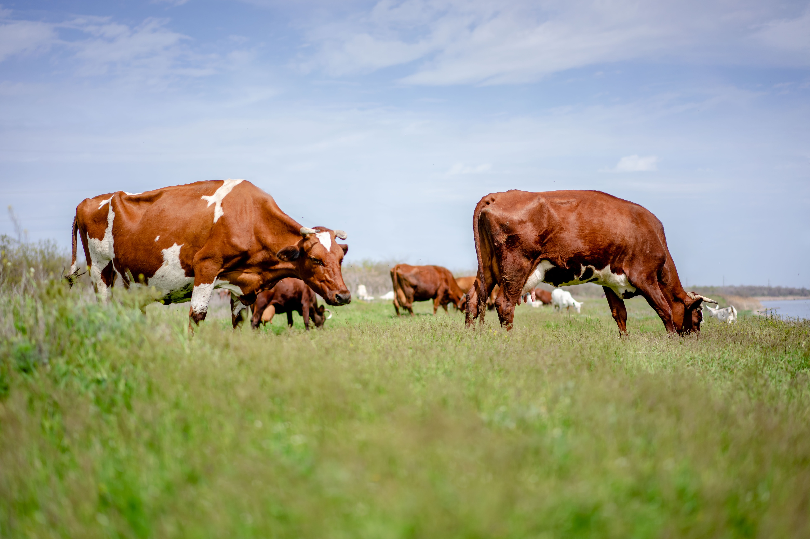

<div class="w-full carousel bdy">
    <div id="slide1" class="relative w-full carousel-item">
       
   
      
      <div class="absolute flex justify-between transform -translate-y-1/2 left-5 right-10 top-1/2 land_button">
       <!-- <button class=""></button> -->
      </div>

      <div class="absolute flex justify-between transform -translate-y-1/2 left-5 right-5 top-1/2">
        <a href="/components/carousel#slide4" class="carousel-center" style="color: white;">❮</a> 
        <a href="/components/carousel#slide2" class="carousel-center"  style="color: white;">❯</a>
      </div>
    
    </div> 


    <div id="slide2" class="relative w-full pt-20 carousel-item">
       
      <div class="absolute flex justify-between transform -translate-y-1/2 left-5 right-5 top-1/2">
        <a href="/components/carousel#slide1" class="btn btn-circle">❮</a> 
        <a href="/components/carousel#slide3" class="btn btn-circle">❯</a>
      </div>
    </div> 
    <div id="slide3" class="relative w-full pt-20 carousel-item">
       
      <div class="absolute flex justify-between transform -translate-y-1/2 left-5 right-5 top-1/2">
        <a href="/components/carousel#slide2" class="btn btn-circle">❮</a> 
        <a href="/components/carousel#slide4" class="btn btn-circle">❯</a>
      </div>
    </div> 
    <div id="slide4" class="relative w-full pt-20 carousel-item">
       
      <div class="absolute flex justify-between transform -translate-y-1/2 left-5 right-5 top-1/2">
        <a href="/components/carousel#slide3" class="btn btn-circle">❮</a> 
        <a href="/components/carousel#slide1" class="btn btn-circle">❯</a>
      </div>
    </div>

    
  </div>


